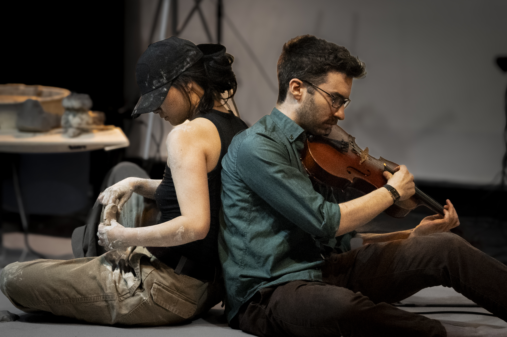
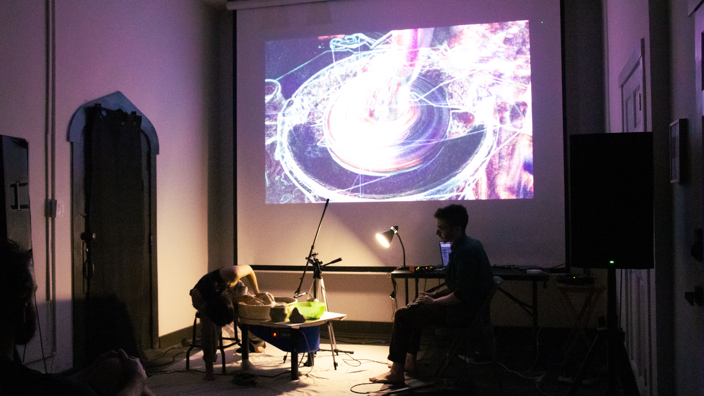
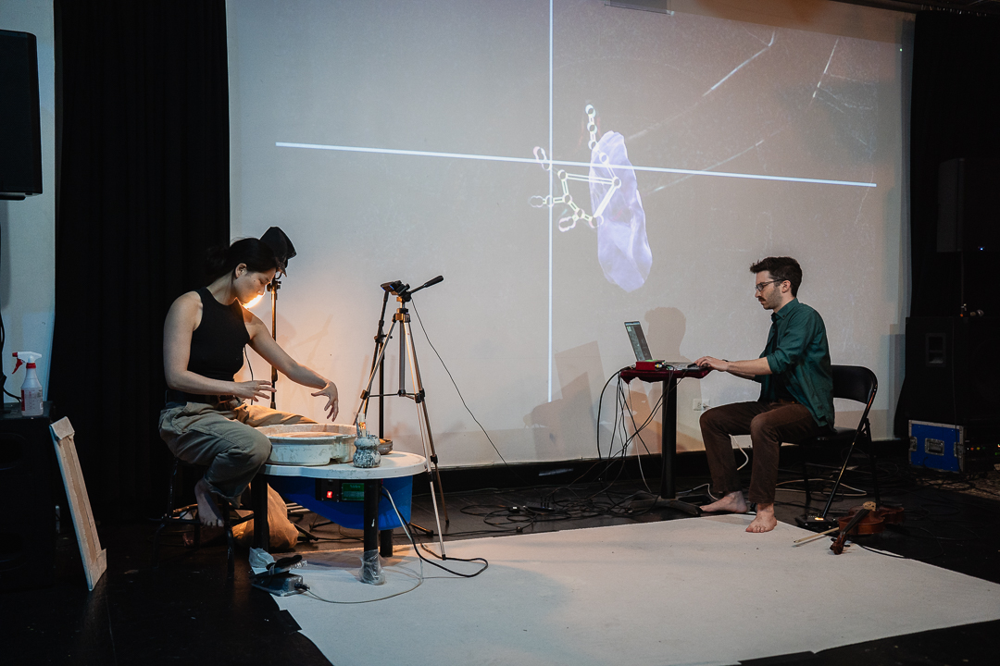

As I write this, my pants are soaking in hot water so the wet clay can come off. We had our premiere on May 22 and a second show on June 8. The shows went well, and I was thrilled to release and share the project into the public realm in 2 venues.
Here's a few pics from the shows:
Photo credit: Ricardo Adame

Photo credit: Tim Schmoll

Photo credit: Theo Luna Baker-Stohlmann
The first sessions we had were exploratory sessions, focusing on how the pottery wheel would function as an instrument, and coding a prototype Max/Touchdesigner patch to transform data-sound sources into sound and visuals.
Quite frankly, I didn't think that the acoustic sounds of wet-clay-shaping alone were intriguing enough to sustain a performance, so I wanted to use some pre-recorded samples to put some spice on it. This way, I could mix the acoustic and "canned" sounds to create dramaturgy, and QuJie can work with the clay without worrying if it'll always "sound" good.
I began creating an environment where I could mix different sources of sound and data. My plan was to give QuJie the ability to create sounds using the acoustic possibilities of the wheel, the pedal, the clay, and the positions of her hands.
Thus, I had 4 inputs:
- Acoustic sounds from a microphone
- Pre-recorded samples
- Camera placed over the wheel (hand tracking through MediaPipe)
- Speed of the wheel (how could I measure this and map it?)
And I mapped these inputs to create 4 audio outputs:
- Acoustic sounds of the wheel
- Data from hand position controlling granulators and resonant filters that manipulate the live sound
- Data from hand position controlling granulators that manipulate pre-recorded samples
- Sonification of the speed of the wheel
For tracking the speed of the wheel, my initial idea was to tape a sensor to the side of it, however after thinking about it for 2 seconds, I realized that the wheel will be wet. Another option would have been to put a colored marker on the wheel, and use computer-vision algorithms to track the marker and derive the speed of the wheel. Common sense eventually got a hold of me and I decided to rubber-band the sensor to the wheel's foot-pedal. Since the pedal's angle changes the speed of the wheel, you could associate the speed of the wheel to the angle of the sensor. Done.
For manipulating the live sound and pre-recorded samples, I recycled a method that I developed for my 2024 work Digital Hands. Essentially, I had Touchdesigner take measurements of the hand position such as (x,y) coordinates, and the distance from the thumb to the index finger, and I map these numbers to control granulator settings (duration, trigger rate, playback rate, and gain). The result is a sound where the articulation is controlled by the movement while preserving the timbre of the sample.
For the projections, I created 2 visual outputs:
- The raw output of the camera which will be distorted by the sound created by QuJie
- A virtual blob of clay that is distorted by QuJie's hand position on a black background

Photo credit: Ricardo Adame
The idea to create a virtual blob of clay came later as we were experimenting with the sampled sounds. The virtual clay would appear on the projections right where the real clay would be, creating a digital-double that follows the rules of glitchy algorithms rather than the touch of human hands. The virtual clay did not move according to any laws of physics, but rather simple math using the (x,y) position of QuJie's index fingertip.
QuJie's hand presence within the webcam's view would trigger both the virtual clay and the sampled sounds. Thus, she could control the phrasing. If her hands were outside the webcam's range, the audience wouldn't hear or see any digital byproduct.
That's all for now. The next entry will discuss how the tech influences and is influenced by the discourse of the performance.